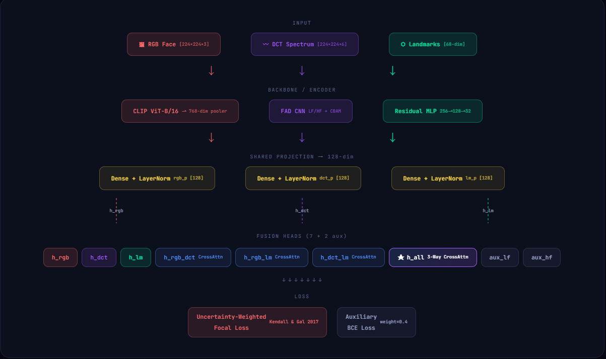

현재 딥페이크의 기술은 끊임없이 진화하고 있다.
과거에는 육안으로 식별 가능하였던 것들이 이제는 구분이 불가능 할 만큼 진화하여
이러한 것들을 빠르게 스캔하고 진위를 가려내어 디지털 신뢰성을 회복할 수 있도록 하려 한다.
훈련 데이터: FaceForensics++ (c23, c40), DFF, HiDF
평가 데이터: CelebDF-v2, RedFace
| 항목 | FF++ | DFF | HiDF |
|---|---|---|---|
| 위조 방법 |
Face2Face FaceSwap DeepFakes NeuralTextures |
AutoEncoder GAN |
GAN Diffusion |
| 특징 및 규모 | 원본에 대해 4종류 변형 |
실존 인물 활용 고해상도 이미지 |
실제 환경 노이즈 포함 |
| 항목 | CelebDF-v2 | RedFace |
|---|---|---|
| 위조 방법 |
AutoEncoder 색상불일치, 깜빡임 최소화 |
Face Swap Face Reenactment |
| 특징 및 규모 | FF++대비 월등한 품질 | 미공개된 위조기술 일반화 |
본 파이프라인의 학습 및 검증/테스트 데이터 세트는 영상 단위 분할 원칙을 따릅니다.
단순 프레임 단위 추출시 동일한 원본 영상에서 추출된 데이터가 검증/테스트에 동시에 누수됩니다.
이는 모델의 과적합을 야기하므로 Source Video ID기준으로 완전히 분리하였습니다.
Computing Environment & FrameWork
RTX 4060 (6GB)// TensorFlow 2.10.0
CLIP ViT-B/16 기반 RGB 브랜치, WS-ViT 주파수 브랜치, Residual MLP 기하학 브랜치 등을
효율적으로 학습시키기 위해 MixedUp을 전역적으로 사용하여 VRAM 사용량을 최적화 하여,
해당 사양에서 낼 수 있는 최대의 효율을 내려 했다.
네트워크 학습에는 Adam Optimizer를 사용하였으며,
초기 그래디언트 폭발을 방지하기 위해 gradient clipping을 적용하였으며,
Batch-size를 16으로 선언하였다.
외 안정적인 수렴을 위해 Warmup Cosine Decay 학습률 스케일러를 도입하였으며,
총 50epoch 중 5epoch 동안 학습률을 선형적으로 증가 시켰고, 나머지 Epoch동안 점진적으로 감소시켰다.
Multi-head Attention에서 영감을 받아, 3개의 층이 Total 7개의 head가 되어 진행한다.
각각의 head 성능 차이로 인해, 모든 head의 가중치가 동결되며
특정 head 만으로 추론하는 것을 막으려 했다.

3-Phase 스케줄링 기법을 적용하였다.
Phase 0
RGB 브랜치(CLIP)를 동결하고, 관련 그래디언트 흐름을 차단한 상태에서
Wavelet 및 Landmark 브랜치만을 높은 학습률로 사전 학습한다.
Phase 1
CLIP 백본은 동결한 상태에서,
세가지 모달리티를 융합하는 Cross-Attention 네트워크를 결합하여 Joint 학습을 수행한다.
Phase 2
전체 파이프라인을 안정화 한 후 CLIP의 상위 2개 Transformer 블록과
시각적 프로젝션 층의 가중치 동결을 해제한다.
이 때, Pre-trained 지식의 훼손을 막기 위해 학습률을 기존의 1%수준으로 낮추어 미세조정한다.
Domain Fingerprint
CelebDF의 real과 FF++의 real은 촬영 환경이 전혀 다르다.
모델이 "진짜/가짜"가 아니라 "어느 데이터셋 출신인지"를 학습할 위험이 있다.
Data Leakage
같은 영상의 프레임이 train/test에 동시에 들어가면 "memorization"이 일어나 허위로 높은 성능이 나온다.
영상 ID 단위 분할이 필수다.
학습셋의 균형은 맞지만, 검증 데이터셋에서 Data의 Fake, Real 비율이 맞지않아
Undersample + Focal Loss 이중 전략을 채택하였다.